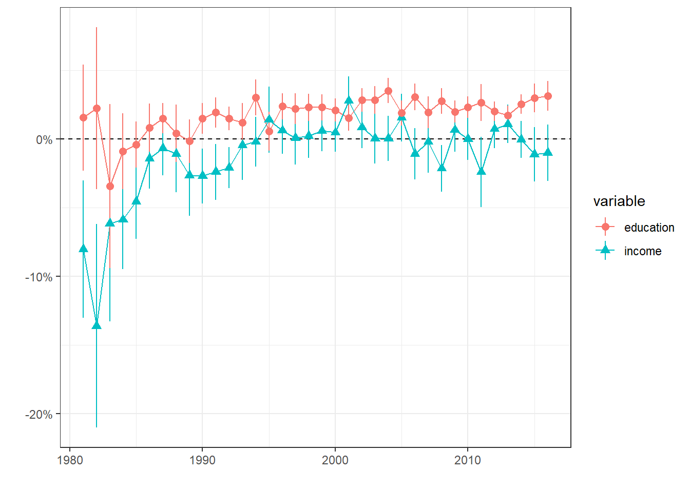

| p02 | n | prop | label |
|---|---|---|---|
| 0 | 1938 | 0.0177440029 | PDC+PCS groupés |
| 1 | 227 | 0.0020783739 | PCS/CSP |
| 2 | 6148 | 0.0562900568 | PDC/CVP |
| 3 | 905 | 0.0082860282 | PEP/EVP |
| 4 | 7511 | 0.0687694561 | PRD/FDP |
| 5 | 376 | 0.0034425929 | PdL (PA)/FPS (AP) |
| 6 | 3175 | 0.0290697674 | PES/GPS |
| 7 | 663 | 0.0060703168 | AdI/LdU |
| 8 | 580 | 0.0053103827 | Lega |
| 9 | 963 | 0.0088170665 | PLS/LPS |
| 10 | 672 | 0.0061527193 | PdT [POCH, PSA]/PdA [POCH, PSA] |
| 11 | 282 | 0.0025819447 | DS (AN)/SD (NA) |
| 12 | 16326 | 0.1494781176 | PSS/SPS |
| 13 | 10603 | 0.0970792895 | UDC/SVP |
| 14 | 79 | 0.0007233107 | FraP |
| 15 | 161 | 0.0014740890 | AV/GB |
| 16 | 15 | 0.0001373375 | AdG |
| 17 | 143 | 0.0013092840 | UDF/EDU |
| 18 | 541 | 0.0049533053 | PBD/BDP |
| 19 | 836 | 0.0076542758 | Verts Libéraux/GLP |
| 20 | 4368 | 0.0399926753 | PLR/FDP Die Liberalen |
| 30 | 915 | 0.0083775865 | Autre parti |
| 31 | 4495 | 0.0411554660 | Plusieurs partis |
| 32 | 2123 | 0.0194378319 | Pas un parti, mais une personne |
| 33 | 34607 | 0.3168558872 | Aucun parti |
| NA | 10568 | 0.0967588354 | NA |
Political Cleavages and inequality
Introduction and Problématique
How does social inequality affect political cleavages and political conflict? A recent trend in political economy has developed and built a tremendous analysis of the evolution of political cleavages in almost all democratic countries around the world. This sudden interest, whose origin can be traced back to Piketty’s last book (Piketty 2019), gave rise to the World Political Cleavages and Inequality Database (WPID) and to a book which analyses the effect of income, social and educational inequality on the structure and transformation of political cleavages from 1948 to 2020 in 50 countries (Gethin, Martinez-Toledano, and Piketty 2021).
Why have political cleavages and political conflict become popular among economists such as Piketty, who were originally more focused on inequality analysis? An answer could be the inequality paradox: the fact that rising inequality in almost all developed countries in the world has no paved the way to growing support for left and far-left parties, income and wealth redistribution and for political contest in general. Political economists such as Piketty have spent years studying inequality, how the latter has evolved and can disturb political and economic stability and how they can be reduced to make society more equal. However, whereas the technical solutions are here, political outcomes are not. Political economists have thus realized that the persistence of inequality is not only technical problem, but also a political one and that inequality analysis musts thus take politics into account.
It is interesting to note how the same reasoning can be applied to ecology. Ecologists face indeed the same issue: global warming becomes increasingly more threatening, and scholars know how it could be stopped or at least reduced, but there is paradoxically no political outcome and no serious political measure which has been taken despite the emergency.
The work of Piketty and coauthors can be summarized as follows: in the post-war period, political cleavages were bipolar with respectively a left a right bloc. Support for social-democratic parties was negatively correlated with income and education: the lower the income and level of education, the higher the probability to support the left and left economic policies. Conversely, support for right-wing parties was positively linked with income and educational level. Political cleavage was thus “classist” and bipolar in the sense that the political positioning of an individual on the left-right axis was mainly determined by his position in the economic structure.
The situation changed around the 1970s and 1980s: the support for the left became positively correlated with education whereas the support for the right remained linked positively with income and education. Political cleavages became thus “multipolar” by combining an economic cleavage (degree of income and wealth), which became relatively less salient, with a growing “cultural” cleavage due to the increase in average educational level. People who are familiar with political science literature will here recognize that Piketty is simply re-asserting Inglehart’s famous “post-materialist” divide over cultural issue, but giving much importance to education as a source of this cleavage.
The left has thus become “brahmin” because supported by high education voters. The right remains “merchant” because it still is supported by the rich. Finally, a new bloc, the “social-nativist” bloc, gathers voters with low income and low educational level. Piketty shows great concern towards the latter, calling it often the “social-nativist trap” (Piketty 2019).
Amable and Darcillon (2022) offer more contrasted results. Income levels are found to be still an important factor in the formation of political preferences in the classic left-right divide. They identify the possible alliance between the most educated and rich groups, giving rise to a bourgeois bloc. Amable and Palombarini notably described and analyzed how the traditional left and right blocs collapsed in France and how this phenomena allowed the emergence of a bourgeois bloc (led by Macron and his party) gathering the most educated and wealthy voters. In this perspective, the emergence of a bloc bourgeois does not imply the end of class conflict, but rather its reinforcement (Amable and Palombarini 2018).
Political cleavages, political conflict and inequality in Switzerland
Switzerland is considered by this literature as the country in which those transformations have been one of the most important. For instance, Durrer de la Sota et al. explain that “Switzerland is the country where the shift of the higher educated towards the left has been the most dramatic” (Durrer de la Sota, Gethin, and Martinez-Toledano 2021, 4). Switzerland is infamous for being the home of one of the most successful social-nativist party, the SVP which now the first political party in Switzerland. Green parties have also become an important force and they are separated between the liberal ecologists and social ecologists. The important elements of the WPID’s analysis of Switzerland are the following:
The authors used Swiss Election Studies (Selects) data, which are data collected after each parliamentary election.
The educational shift happened in the late 80s, the period 1983-7 being the last “class-based” period. Switzerland’s political landscape is now a multi-polar and multi-elite one: the support for the greens and socialists is linked positively with education, the rich still support radical/liberal parties and the SVP represents the social-nativist bloc gathering the low income and low education voters.
The traditional parties, the Socialists (Swiss Socialist Party SSP), the Liberals and Radicals, and the Christian Democrats are in a declining trend, if not collapsing.
The Greens andradical right are the new strong emergent parties, the latter being the most important bloc.
Research questions, hypotheses and empirical strategy
Research question
The present article will test Piketty’s Brahmin left vs Merchant right divide as well as the WPID’s findings on Switzerland. The objective is to explore the following research question:
To what extent is the support for the left linked positively with the level of education and negatively with the level of income
To what extent is the support for right parties linked positively with the level of income
Are there parties for which the support increase with both the level of income and education?
Hypothese
These research questions can be given temporary hypothetical answers:
Brahmin left hypothesis:
- The support for left-wing parties (mostly SSP and the Greens) is linked positively with the level of education, with no clear link with the level of income.
Merchant right hypothesis:
- The support for traditional right-wing parties (Liberal-Radicals, Christian Democrats which have become recenty “the center”) is linked positively with the level of income.
Bourgeois bloc hypothesis
- The support for right-wing parties is linked positively with both the level of income and education.
Data
As mentioned above, the WPID’s findings for Switzerland are based on Selects data. Since using Selects data again would not make great sense, unless a very different and specific methodology is used, I tried my best to find another data source. I have thus found an interesting dataset, the standardized Voxlt surveys, which are post-electoral survey data that were collected after each referendum voting from 1981 to 2016. In those surveys, not only referendum voting decisions were collected, but also information on party identification, left-right positioning and various soc-dem characteristics.
Party identification will obviously be the dependent variable. I create a dummy variable for each party support.
The two main explanatory variable will be income and educational level. On the one hand, the dataset contains the variable “educ” which is a 1-6 point scale variable on the highest achieved level of education of the respondant, 1 being mandatory school and 6 university. I do not here perform any modification on this variable and I will consider it as continuous. Considering this variable as continuous is not a ideal option since the distance between each group is not really the same, but since I will perform complex multilevel models with years as a level and varying slopes for education and income, considering this variable as a factor would make computation in R very hard and tedious (especially the glmer function, which can take a long time).
On the other hand, the dataset offers two variables for income: “nivmena” and “revenu”.
| educ | n | prop | label |
|---|---|---|---|
| 1 | 14982 | 0.137172679 | Ecole obligatoire |
| 2 | 50054 | 0.458286028 | Apprentissage |
| 3 | 9926 | 0.090880791 | Maturité + école normale |
| 4 | 11006 | 0.100769090 | Formation prof. supérieure |
| 5 | 5695 | 0.052142465 | Haute école spécialisée |
| 6 | 16640 | 0.152353049 | Université + Polytechnique |
| NA | 917 | 0.008395898 | NA |
On the other hand, the dataset offers two variables for income: “nivmena” and “revenu”. Nivmena, a 4 point scale ordinal variable (in categories), was collected until 1993 and revenu was then collected. the latter is a 5 points scale ordinal income brackets variable.
vox %>%
count(nivmena) %>%
mutate(prop = n/sum(n),
label = as_character(nivmena)) %>%
gt() %>%
gt_theme_dark()| nivmena | n | prop | label |
|---|---|---|---|
| 1 | 1887 | 0.01727706 | Elevé |
| 2 | 6687 | 0.06122505 | Moyen supérieur |
| 3 | 12438 | 0.11388024 | Moyen inférieur |
| 4 | 3283 | 0.03005860 | Bas |
| NA | 84925 | 0.77755906 | NA |
vox %>%
count(revenu) %>%
mutate(prop = n/sum(n),
label = as_character(revenu)) %>%
gt() %>%
gt_theme_dark()| revenu | n | prop | label |
|---|---|---|---|
| 1 | 7886 | 0.07220289 | 3'000.- CHF et moins |
| 2 | 17535 | 0.16054752 | de 3'001 à 5'000.- CHF |
| 3 | 18302 | 0.16757004 | de 5'001 à 7'000.- CHF |
| 4 | 11988 | 0.10976012 | de 7'001 à 9'000.- CHF |
| 5 | 12390 | 0.11344076 | 9'001.- CHF et plus |
| 8 | 4784 | 0.04380150 | nsp |
| NA | 36335 | 0.33267717 | NA |
I made the choice to merge the two variables by recoding the revenu variable so that it fits into the categories of the first variable. I do so by considering the first income bracket as the “low” category, the second as “inferior-middle”, the third and fourth as the “upper-middle” category and the fifth as the “upper” category.
# Two ways to create the income variable
vox <- vox %>%
mutate(income = if_else(revenu == 1 & is.na(nivmena), 4,
if_else(revenu == 2 & is.na(nivmena), 3,
if_else(revenu %in% c(3,4) & is.na(nivmena), 2,
if_else(revenu == 5 & is.na(nivmena), 1,
if_else(is.na(revenu) & annee <= 1993, nivmena, NA))))))
vox$income <- ifelse(vox$income == 4, -1,
ifelse(vox$income == 3, 0,
ifelse(vox$income == 2, 1,
ifelse(vox$income == 1, 2, NA)))) # centering around zero, this will make the intercept more interpretable
# for education, rescale the values so that the lowest level is equal to zero
vox <- vox %>%
mutate(education = case_when(
educ == 1 ~ 0,
educ == 2 ~ 1,
educ == 3 ~ 2,
educ == 4 ~ 3,
educ == 5 ~ 4,
educ == 6 ~ 5,
is.na(educ) ~ NA
))Exploratory Analysis
Let’s first see how support for the Swiss Socialist Party (SSP) evolved across income groups in the last decades. I expect the lower groups to support the SSP until the 1990s, when the poor have supposedly shifted their support from the SSP to other parties (mainly the SVP) or to abstention.

The graph above shows well the reversal of the SSP support. From 1981 to around 1992, the lowest income groups (1 and 2) were the groups that supported the SSP the most. The richest group (4) was clearly not supporting the SSP a lot until the middle of the 1990s, when it became the most supportive group!. A reversal has thus clearly happened during the 1990s: the support for SSP declined among the poorest and increased among the upper middle class and the richest.
Let’s now see how the support for the radicals/Liberals evolved. The Radicals are surely one of the most important political bloc historically in Switzerland. Radicals literally created modern Switzerland in the middle of the 19th century. Radicals underwent a lot of transformations, fusions and alliances with other parties. From 1984 to 2008, their party was the “radical-democratic party” after having merged with Swiss democrates. In 2009, this party merged again with another, the Swiss Liberal party, to create the Liberal-Radical (PLR) party which is the party which exists until nowadays. The bourgeois element of this bloc has never been a taboo and the PLR can clearly be named a bourgeois party.
The bourgeois dimension of the PLR is also made clear by the graph below:

We can see that the radical-democrates (from 1981 to 2008) and then PLR (2009-2016) was always mainly supported by the richest income groups. Support among the poorest rarely went beyond the 10%.
Regarding the support for Swiss People’s party (SVP), here is the graph below:

The graph illustrates well how the avarage support for SVP increased in almost all income groups, except for the highest group. The latter used to support SVP the most until the late 1990s. Moreover, we can see that the common and widespread idea that the SVP is the most successful among the poorest voters is an exaggeration. The support for SVP also increased among the third and second income group. It is interesting to note how a reversal happened in 1992, the year of the voting on the adhesion to the European Economic Area (EEA). Before 1992, the richest group used to be the most supportive of the SVP. After 1992, the support among the richest declined and is the lowest in almost every year.
Modelling
To analyze the relationship between party support and income and education, let’s now run some regressions. I will run separate binary logit regression for each party support dummies with income and education as explanatory variable. Since we have a timeframe which goes from 1981 to 2016, a choice has to be made regarding which regression model to run in order to take years into account. The first and most simple option would be to run separate regressions for each year. This is the repeated cross-sectional regression option. Another option would be to run a multilevel regression with years as a level and with varying slopes for education and income.
The first option is a lot more convenient than the multilevel model, because it is a lot faster to run in R, especially when control variables are added in the model. However, multilevel model is more appropriated and gives more robust results and better inference. Since it would be also interesting to compare the results between the two options, both repeated cross-sectional and multilevel regressions will be run here.
Repeated Cross-section: support for SSP
Let’s first run binary logit regression separately for each year of the dataset. The package purrr and map() function allows to do this quiet easily:
glmer_ssp <-
vox %>%
split(.$annee_f) %>%
map(~ glmer(pss ~ income + education + gender + (1 | canton_f),
data = .x, family = binomial(link = "logit")))
ame_glmer_ssp_inc <-
glmer_ssp %>%
map(~slopes(.x ,variables = "income")) %>%
map_df(~summarise(.x, ame = mean(estimate),
high = mean(conf.high),
low = mean(conf.low))) %>%
mutate(year = 1981:2016,
variable = "income")
ame_glmer_ssp_educ <-
glmer_ssp %>%
map(~slopes(.x ,variables = "education")) %>%
map_df(~summarise(.x, ame = mean(estimate),
high = mean(conf.high),
low = mean(conf.low))) %>%
mutate(year = 1981:2016,
variable = "education")
ame_glmer_ssp <- rbind(ame_glmer_ssp_inc, ame_glmer_ssp_educ)
ame_glmer_ssp %>% plot_ame()
nprcs_ssp <-
vox %>%
split(.$annee_f) %>%
map(~ glm(pss ~ income + education, data = .x, family = binomial(link = "logit")))To present the results, I compute average marginal effects (AME) for each year:
# computing average marginal effect for each year
ame_income_nprcrs_ssp <-
nprcs_ssp %>%
map(~slopes(.x ,variables = "income")) %>%
map_df(~summarise(.x, ame = mean(estimate),
high = mean(conf.high),
low = mean(conf.low))) %>%
mutate(year = 1981:2016,
variable = "income")
ame_educ_nprcrs_ssp <-
nprcs_ssp %>%
map(~slopes(.x ,variables = "education")) %>%
map_df(~summarise(.x, ame = mean(estimate),
high = mean(conf.high),
low = mean(conf.low))) %>%
mutate(year = 1981:2016,
variable = "educ")
ame_nprcrs_ssp <- rbind(ame_income_nprcrs_ssp, ame_educ_nprcrs_ssp)## plot the AME for each year
plot_ame_ssp <-
ame_nprcrs_ssp %>%
plot_ame()+
labs(title = "Probability to vote for SSP",
subtitle = "Repeated Cross-sectional logit regressions",
y = "", x = "Average Marginal Effect")
plot_ame_ssp
This graph offers interesting results. The support for SSP used to be strongly negatively associated with income in 1981-2, but this negative relationship declined a lot during the 80s. It recovered a bit during the 90s but then even became positive in the middle of the 1990s and positive again in the early 2000s. On the other hand, the support for SSP seems to be always linked positively with the level of education. We can thus say that the SSP was and still is indeed a brahmin party, and even endorse the role of a bourgeois party for some years when its support is linked positively with income and education.
Another way to represent the relationship between support for SSP and income and education is to estimates of probability differences between given values of the predictors using the comparisons() function, which compute (in our case) probability differences between values at certain levels. The graph below show comparisons between the highest and lowest income groups (4-1). For education, I compare the highest level of education (university) not with the lowest level (primary school), but with vocational trainees/apprenticeship because the latter is the most widespread highest achieved level of education in Switzerland, even nowadays.

In 1981, an individual of the highest income group was 28% less probable to support the SSP compared with someone from the lowest income income. This difference decreased substantially over the years, and is rather close to zero nowadays. This is not the case for education. In 1981, a highly educated individual from either university of polytechnic school had around 19% more probabilities to support the SSP than someone who completed an apprenticeship. This difference has decreased over the years, but is still quiet high, around 10% in 2016. This show that the SSP was and still is the party of the most educated, but not necessarily of the poorest or the richest.
To check whether the results above are robust, I run and present a second model which controls for soc-dem characteristics (age, gender, marital status, region):
plot_ame_nprcs_ssp_controls <-
ame_nprcs_ssp_controls %>%
plot_ame()+
labs(title = "Probability to support the SSP",
subtitle = "Repeated Cross-sectional logit regressions, after controls",
y = "", x = "Average Marginal Effect")
plot_ame_nprcs_ssp_controls
The graph above does not imply any change to the broad picture, let’s see for comparisons

The differences in probability have slighlty change, but the conclusions here are in fine the same as the no-controls regression.
Repeated Cross-section: support for SVP
The results show how the support for SVP is clearly linked negatively with educational level. The relationship with income is less clear since a lot of the results are not statistically significant (the confidence interval cross 0 for most years). Here I will not give any conclusion before fitting the multilevel regression.

Repeated Cross-section: support for PLR

comparisons_plr_educ <-
nprcs_plr_controls %>%
comparisons_educ()
comparisons_plr_income <-
nprcs_plr_controls %>%
comparisons_income()
comparisons_plr <- rbind(comparisons_plr_educ, comparisons_plr_income)
comparisons_plr %>%
plot_ame()+
labs(title = "Difference in Predicted Probabilities: vote for radicals/liberals",
subtitle = "Repeated Cross-sectional regressions, with controls")
Finally, here are the results for PLR support. We can see that the PLR clearly fits into the bourgeois category with support linked positively with both education and income, the latter being the important factor even if it declined nonetheless.
Some observations can still be made regarding the comparisons plot. The difference in probability between the richest and poorest in supporting the Radicals/Liberals was highly positive in the 1980s (around 28% in 1981). This difference decreased, but is still high. Most of the time, this difference is also positive between the highest educational group and the second lowest one (apprenticeship).
Repeated Cross-section: support for the Greens


Regarding the support for the Greens, it is associated positively with education. The relationship with income is not clear, the multilevel model will hopefully give better results.
Multilevel regression: partial pooling for years
All the models computed and presented have major drawbacks. First, estimates are surely biased because not all important and potentially confounding variables are included in the model. Since we are not here interested in causality, this does not constitute a major problem either. A bigger problem is the inference: many estimates are not statistically significant. To try to solve this issue, I will now run multilevel regressions. There are many choices regarding the levels: one can choose the canton as a group and run separate multilevel regression for each year. Alternatively, both years and canton can be included as a level in the regression.
Support for SSP
The multilevel regressions, with years as a level, lead globally to the same conclusions as above.
glmer_pss <- glmer(data = vox,
formula = pss ~ income + educ + gender + age_cat + married + regionL + religion + (income + educ | annee_f),
family = binomial(link = "logit"))
The results are very close to the repeated cross-section model.

Support for Radicals/Liberals


Partial Pooling: Support for SVP


Partial Pooling: Support for the Greens


Conclusion
Brahmin Left hypothesis
This hypothesis is globally confirmed. The Swiss socialist party was clearing gathering the most educated and the lowest income groups in the beginning of the 1980s. Then, the negative association between ssp support and income declined during the 1980s, recovered a bit in the late 80s, then declined further and even became positive in the 90s and the beginning of the 2000s, making the SSP a bourgeois party during this period.
Merchant and Bourgeois Bloc hypotheses
The Radicals-Liberals represent clearly a bourgeois bloc, gathering the support of the wealthiest and most educated in almost every year of the dataset. The SVP was a merchant right party until 1992. After this period, the SVP gather mainly support from low income and low level of education groups
tbl_corr_plr <-
vox %>%
group_by(annee, income) %>%
count(plr) %>%
drop_na() %>%
mutate(prop = n/sum(n)) %>%
filter(plr == 1) %>%
pivot_wider(names_from = c("income"), values_from = c("prop", "n")) %>%
drop_na() %>%
ungroup() %>%
mutate(party = "plr") %>%
dplyr::select(-plr)
tbl_corr_pss <-
vox %>%
group_by(annee, income) %>%
count(pss) %>%
drop_na() %>%
mutate(prop = n/sum(n)) %>%
filter(pss == 1) %>%
pivot_wider(names_from = c("income"), values_from = c("prop", "n")) %>%
drop_na() %>%
ungroup() %>%
mutate(party = "pss") %>%
dplyr::select(-pss)
tbl_corr_udc <-
vox %>%
group_by(annee, income) %>%
count(udc) %>%
drop_na() %>%
mutate(prop = n/sum(n)) %>%
filter(udc == 1) %>%
pivot_wider(names_from = c("income"), values_from = c("prop", "n")) %>%
drop_na() %>%
ungroup() %>%
mutate(party = "udc") %>%
dplyr::select(-udc)
tbl_corr <- rbind(tbl_corr_plr, tbl_corr_pss, tbl_corr_udc)
tbl_corr2 <-
tbl_corr %>%
dplyr::select(-matches("n_[1-4]")) %>%
pivot_wider(names_from = "party", values_from = matches("prop_[1-4]"))
cor(tbl_corr2[,2:13]) %>%
corrplot.mixed(order = "hclust", lower = "ellipse", upper = 'number', tl.cex = 0.6)References
Amable, Bruno, and Thibault Darcillon. 2022. “Brahmin Left Versus Merchant Right. How Useful Is This Distinction for the Analysis of Political Divides in Western Democracies?” Political Economy Working Papers.
Amable, Bruno, and Stefano Palombarini. 2018. L’illusion Du Bloc Bourgeois: Alliances Sociales Et Avenir Du Modèle Français. Raisons d’agir. Paris.
Durrer de la Sota, Carmen, Amory Gethin, and Clara Martinez-Toledano. 2021. “Party System Transformation and the Structure of Political Cleavages in Austria, Belgium, the Netherlands and Switzerland, 1967-2019.” World Inequality Lab – Working Paper, no. 2021. https://wid.world/wp-content/uploads/2021/03/WorldInequalityLab_WP2021_08_PoliticalCleavages_AustriaBelgiumNLSwitzerland.pdf.
Gethin, Armory, Clara Martinez-Toledano, and Thomas Piketty. 2021. Political Cleavages and Social Inequalities a Study of Fifty Democracies, 1948–2020. Harvard Univeristy Press.
Piketty, Thomas. 2019. Capital Et Idéologie. Le Seuil.